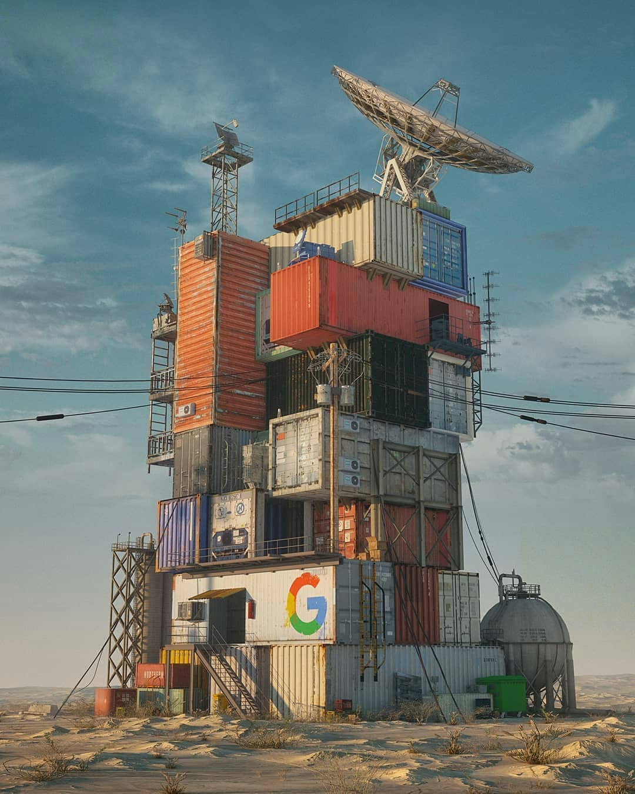
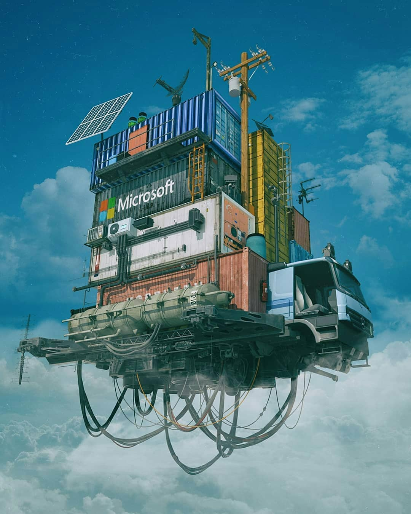
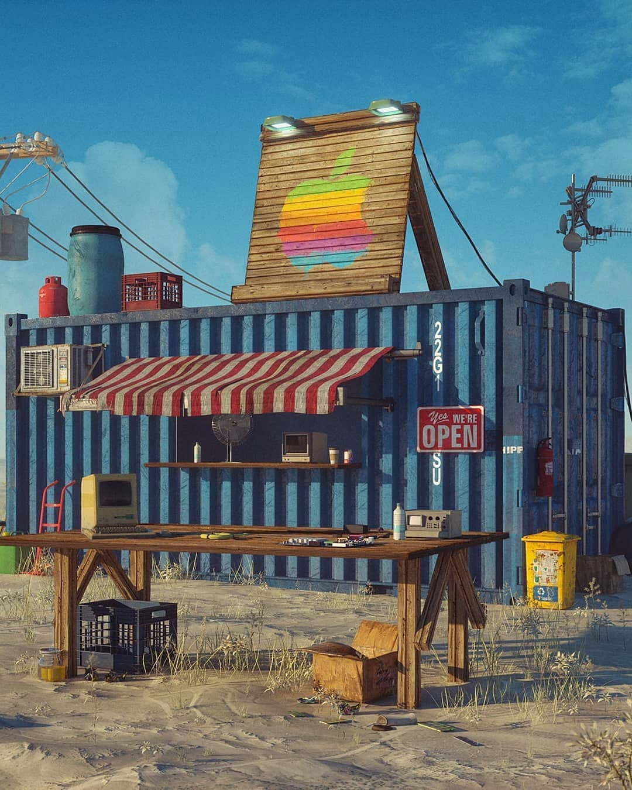
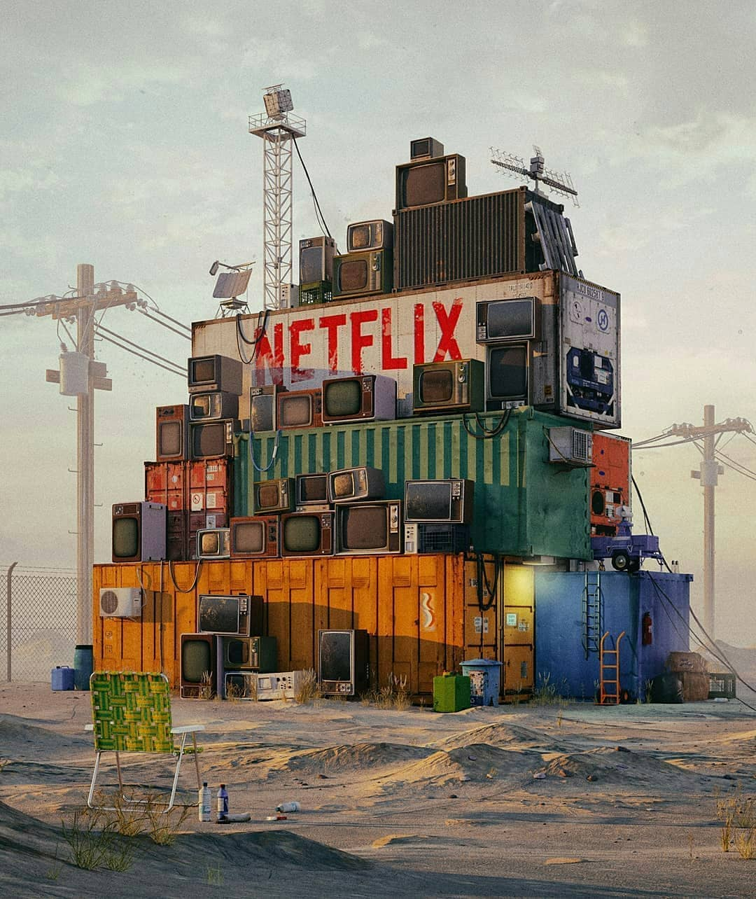

<?xml version="1.0" encoding="UTF-8"?>
<rss version="2.0"
xmlns:content="http://purl.org/rss/1.0/modules/content/"
xmlns:dc="http://purl.org/dc/elements/1.1/"
xmlns:slash="http://purl.org/rss/1.0/modules/slash/"
xmlns:atom="http://www.w3.org/2005/Atom"
xmlns:wfw="http://wellformedweb.org/CommentAPI/">
<channel>
<title>毒奶博主丨欢迎使用代理访问本站。 - 艺术</title>
<link>https://limbopro.xyz/tag/艺术/</link>
<atom:link href="https://limbopro.xyz/feed/tag/%E8%89%BA%E6%9C%AF/" rel="self" type="application/rss+xml" />
<language>zh-CN</language>
<description></description>
<lastBuildDate>Thu, 23 May 2019 14:21:00 +0800</lastBuildDate>
<pubDate>Thu, 23 May 2019 14:21:00 +0800</pubDate>
<item>
<title>赛博朋克，艺术与崩坏。</title>
<link>https://limbopro.xyz/archives/362.html</link>
<guid>https://limbopro.xyz/archives/362.html</guid>
<pubDate>Thu, 23 May 2019 14:21:00 +0800</pubDate>
<dc:creator>毒奶</dc:creator>
<description><![CDATA[cyberpunk特别喜欢的一种艺术风格，或美好，或崩坏。所以就算我京恐症，也会试着去看看流浪地球。ha（xd）释义：赛博朋克（cyberpunk，是cybernetics与punk的结合词），...]]></description>
<content:encoded xml:lang="zh-CN"><![CDATA[
<h2>cyberpunk</h2><p>特别喜欢的一种艺术风格，或美好，或崩坏。<br>所以就算我京恐症，也会试着去看看流浪地球。ha（xd）</p><p></p><p>释义：赛博朋克（cyberpunk，是cybernetics与punk的结合词），又称数字朋克、赛伯朋克、电脑朋客、网络朋客，是科幻小说的一个分支，以计算机或信息技术为主题，小说中通常有社会秩序受破坏的情节。</p><p></p><p></p><p></p><p></p><p>From ig.</p></img></img></img></img></img></br><p class="more"><a href="../../../archives/362.html" title="赛博朋克，艺术与崩坏。">[...]</a></p>
]]></content:encoded>
<slash:comments>0</slash:comments>
<comments>https://limbopro.xyz/archives/362.html#comments</comments>
<wfw:commentRss>https://limbopro.xyz/feed/archives/362.html</wfw:commentRss>
</item>
</channel>
</rss>